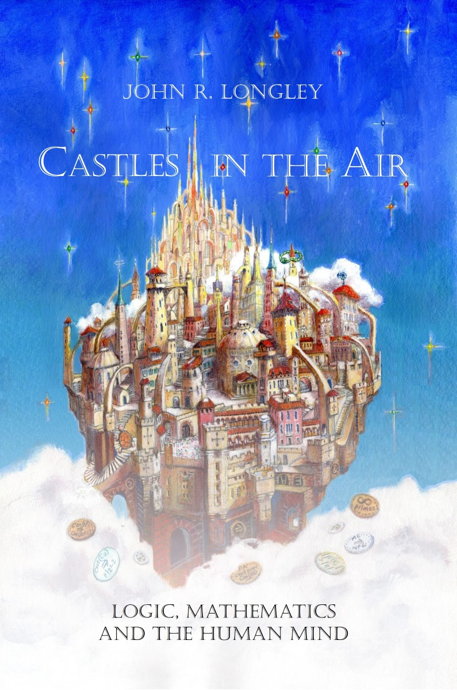

|
 |
CASTLES IN THE AIR by John Longley “A mind-blowing fantasy about - Dr. Justin Clarke-Doane, Columbia University |
Mathematics may be the closest thing we have to an unshakeable edifice of certain, reliable knowledge. Yet the very nature of mathematics poses some deep and perplexing questions. What, after all, is mathematics? Is it a window onto a realm of absolute truth, or just a creation of our own minds? Is all of mathematics really true beyond a shadow of doubt, or are some parts more questionable than others? Are there limits to what can be known in mathematics? Could a computer perceive mathematical truth in the way a human can? Do statements about infinity have any real meaning?
In this absorbing fantasy adventure, mathematical sleuths Anna and Emily embark on a breathtaking tour of mathematical logic, a subject that casts light on these profound questions. Unlocking the secrets of the Castle with the help of Turing, Gödel, Cantor, Hilbert, Cohen and others, they are led through an entrancing labyrinth of ideas and encounter a wide range of philosophical viewpoints. Along the way, they are introduced to self-biting serpents, ordinal staircases, super-infinite stars, universes within universes, and much more — all portraying a wealth of mind-bending concepts, many of which have never before been presented at a popular level.